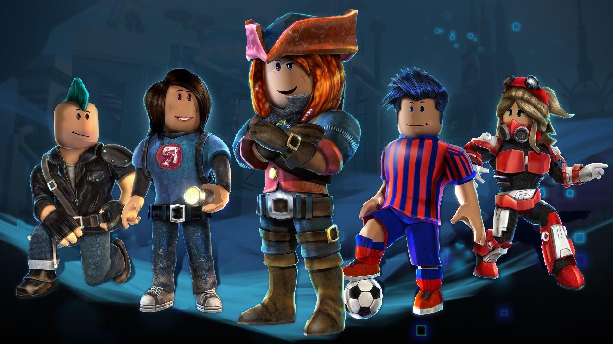
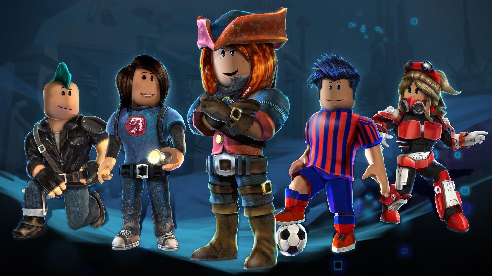

Роблокс — это глобальная платформа, на которой вы можете создавать и играть в миллионы бесплатных игр и опытов с друзьями и другими людьми. Роблокс предлагает вам ультимативную виртуальную вселенную, в которой вы можете быть тем, кем захотите. Присоединяйтесь к миллионам людей и откройте для себя бесконечное разнообразие захватывающих опытов, созданных глобальным сообществом![^1^][1]
Роблокс был основан в 2004 году Дэвидом Басзуки и Эриком Касселем, а в 2006 году был выпущен для публики. С тех пор Роблокс стал одной из самых популярных и успешных платформ для создания и игры в игры, которая привлекает миллионы игроков и разработчиков со всего мира. Роблокс доступен на разных устройствах и платформах, таких как Windows, Mac, iOS, Android, Xbox One, Oculus Rift, Meta Quest и других.[^2^][2]
Роблокс позволяет вам создавать свои собственные игры и опыты, используя интуитивно понятный редактор и мощный язык программирования Lua. Вы можете делиться своими творениями с другими игроками и зарабатывать внутриигровую валюту Робуксы, которую можно тратить на покупку различных предметов и услуг в Роблокс. Вы также можете играть в игры и опыты, созданные другими разработчиками, и наслаждаться разнообразием жанров, стилей и тематик, которые они предлагают.[^3^][3]
 

Роблокс предлагает вам множество игр и опытов, в которые вы можете играть с друзьями или другими игроками онлайн. Вы можете выбрать игру по своему вкусу и интересу, будь то приключение, экшн, симулятор, головоломка, ролевая игра, стратегия, спорт, ужасы или что-то другое. Вы можете найти игры и опыты в Роблокс, используя поиск, фильтры, рейтинги, рекомендации и другие функции. Вы также можете добавлять игры и опыты в ваш список избранных, чтобы легко находить их и возвращаться к ним. Вы также можете создавать свои собственные игры и опыты в Роблокс и делиться ими с другими игроками.
Вот несколько игр и опытов, в которые я играл в Роблокс, и которые мне понравились:
Я играю в Роблокс уже около двух лет и мне очень нравится эта платформа. Я получил много достижений и наград в разных играх и опытах, которые я играл. Вот некоторые из моих достижений:
Если вы тоже играете в Роблокс или хотите попробовать эту платформу, пожалуйста, заполните эту анкету, чтобы поделиться своим мнением о Роблокс. Это займет не более пяти минут, и я буду рад узнать, что вы думаете о Роблокс.